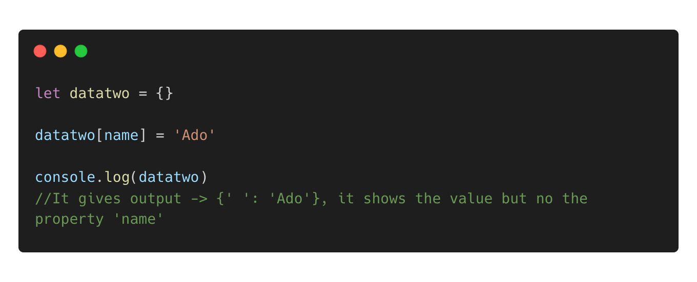
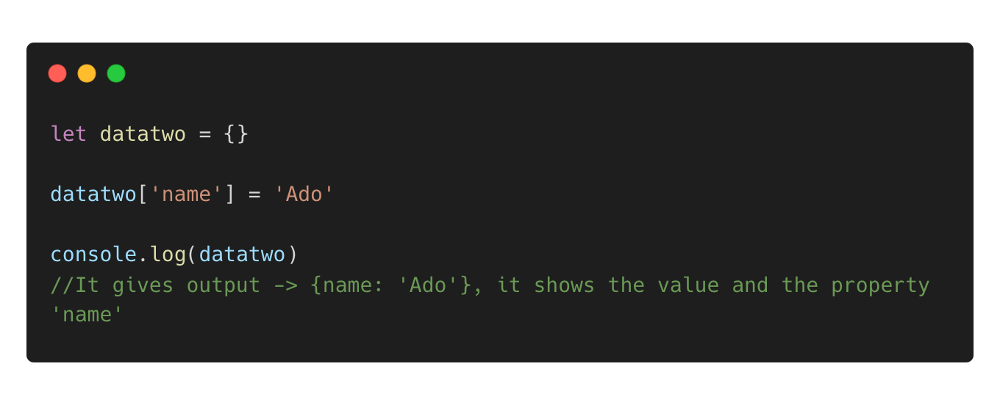
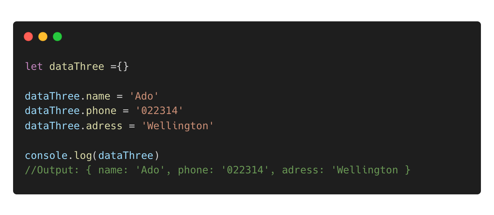
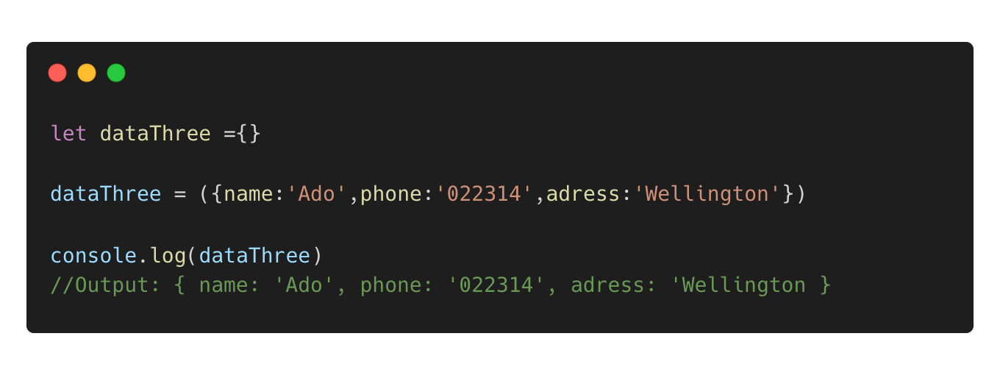

Technical Blog: Problem Solving
In Javascript, The Bracket method is a way to add or access properties in an object. Instead of using the dot notation ( object.property ), you use square brackets ( [] ) and put the property name inside them ( object["property"] ).
Overlooked small but significant problem
Problem
I have an empty object called (dataTwo), and would like to fill in one property and its value ( name : 'Ado' ) to the object. I was curious to try “ Bracket Method “. The picture below, shows that I try using wrong way of “Bracket Method” practice. Because when I check the output it gives me no property called ‘name’, instead of giving value (‘Ado').
Solution
After doing some googling and research regarding to the problem. I realised that I made mistake, the solution on this problem is that I should type code, shown on the below picture.
A little change can make difference, I should be more careful with syntax and always check the JS code references from other website. On the other hand, I tried to do quite different experiments with the Bracket Method, I found that the benefit using that method is you can add a property with a name that is not a valid identifier , for instance, it has spaces or special characters. In which you probably cannot use it with the Dot Notation.
Elegantly solved a problem
In this context, I want add more properties and values of each property into an empty object. At this time I use the Dot Notation. However, I ended up making repetition code to add to the object.
I was feeling that I was not right enough to do repetition on this and I start questioning to myself how to solve it with just one line code. I started to googling and do some research. Finally I found it the way to do that.
The code is tidy and clean. I felt really good after finding how to do that. It was a learning that if whenever I try to solve the problem with code and I make repetition and long code, it is a sign that I need to do more research and find the best solution.
Reflect on how confident you feel using each of these problem-solving techniques:
Pseudocode
Sometimes, when I was trying to solve the problem that I assumed where it needs quite several steps and complex. I use this method quite often in written or even unwritten. It helps quite a lot to understand the problem and solve it systematically .
Trying something
Doing the trial and error, where I want to understand particular JS method is a must for me. I always try with different scenarios, so I could get the depth of the understanding on it.
Reading error messages
To check the reading error message, It is really helpful to fix to the point, often I encountered syntax errors. Therefore, reading errors is really part of my problem solving technique.
Console.logging
To try something out that I write whether or not , it is correct. Often, I use console.logging to testify my code.
Googling or ChatGPT
Googling and using ChatGPT is really helpful, this is my core problem solving, I can easily ask them if I had problem with the code and they wrote me the correct code if I made a wrong code. And I can ask them, how the code works. So it gives me more understanding what is going on the code.
Asking your peers for help
Often whenever I stuck, I ask straightforward to friend of my cohort group, it is good to ask but I need to understand that I do not want to disturb them.
Improving your process with reflection
Reflection is powerful, whenever I finished to solve code problem and I often do reflection by reviewing and evaluating my processes. So I can find the best and effective way on my process.